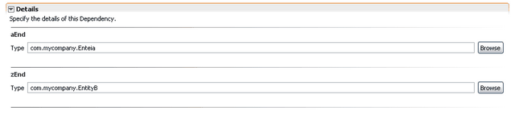

Once you have edited your changes, make sure you Save your changes for them to be taken into account by Tigerstripe. To save, either select the Save option from the File menu entry in the menubar, use the save icon in the toolbar, or hit ctrl-s.First, please make sure the Tigerstripe Perspective is active.
To edit an existing Dependency Artifact, simply select its corresponding entry in the Tigerstripe Explorer, and double-click to open it in an editor. Entity Artifacts are made of the following details:
- General Information: Common to all Artifacts, the general information section covers high level information such as version, description.
- Dependency Ends: In addition to the general items, you can set the end details for the dependency.
Dependency End Details
To edit this depdendency's end details, refer to the Details section. The section looks as shown below:

Each end of the dependency can be further edited. You will find the following detail for each end:
- Type: the fully qualified name of this end of the association